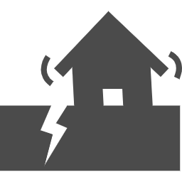
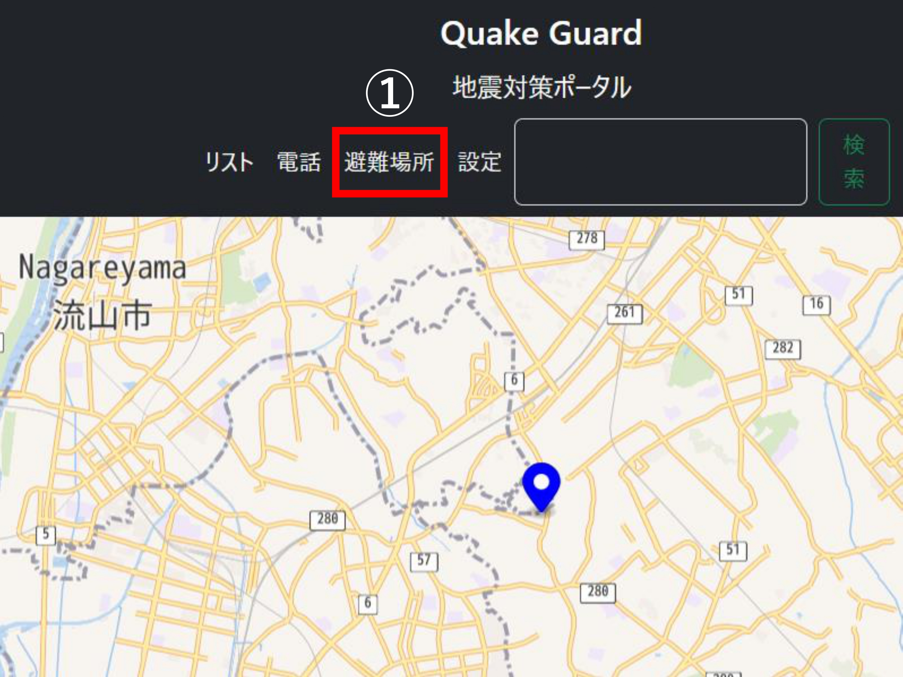
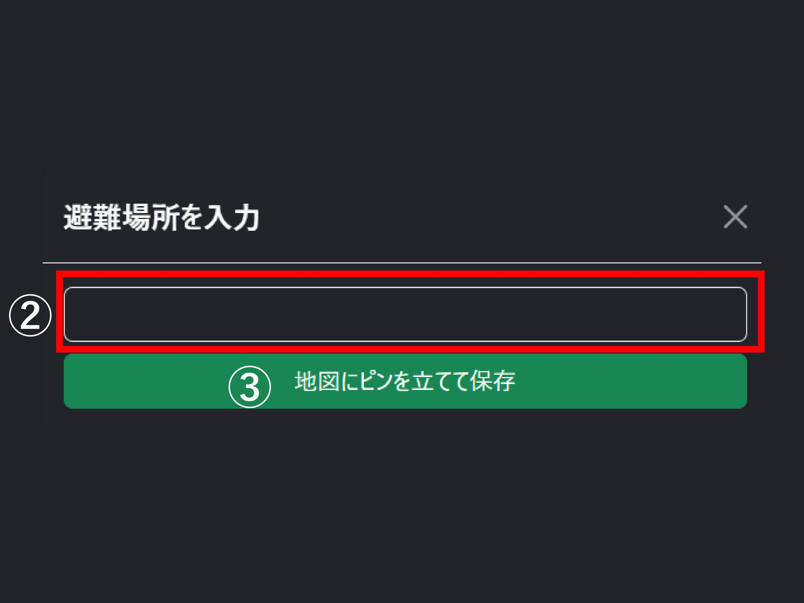
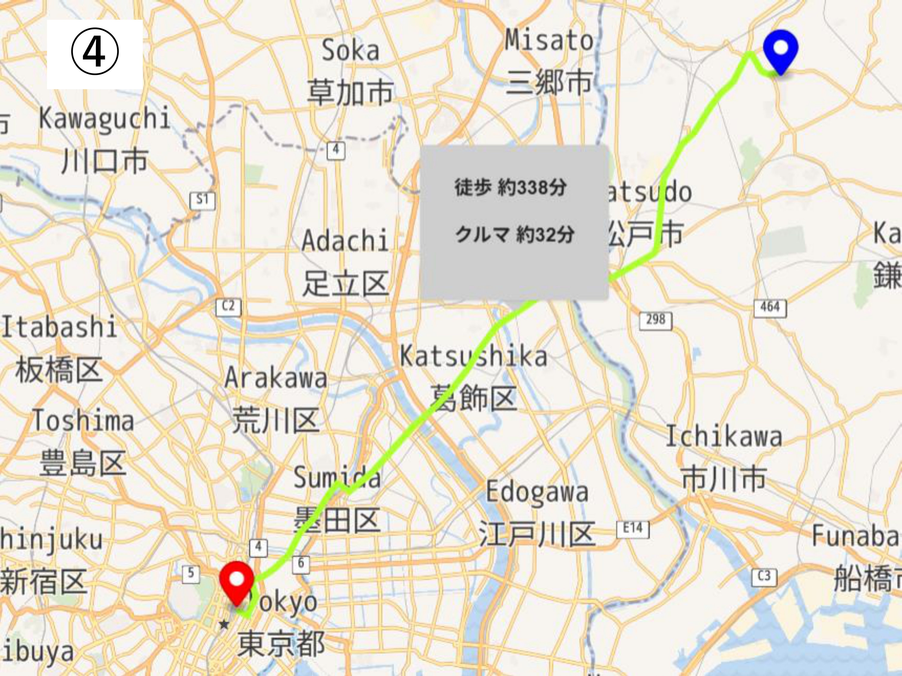
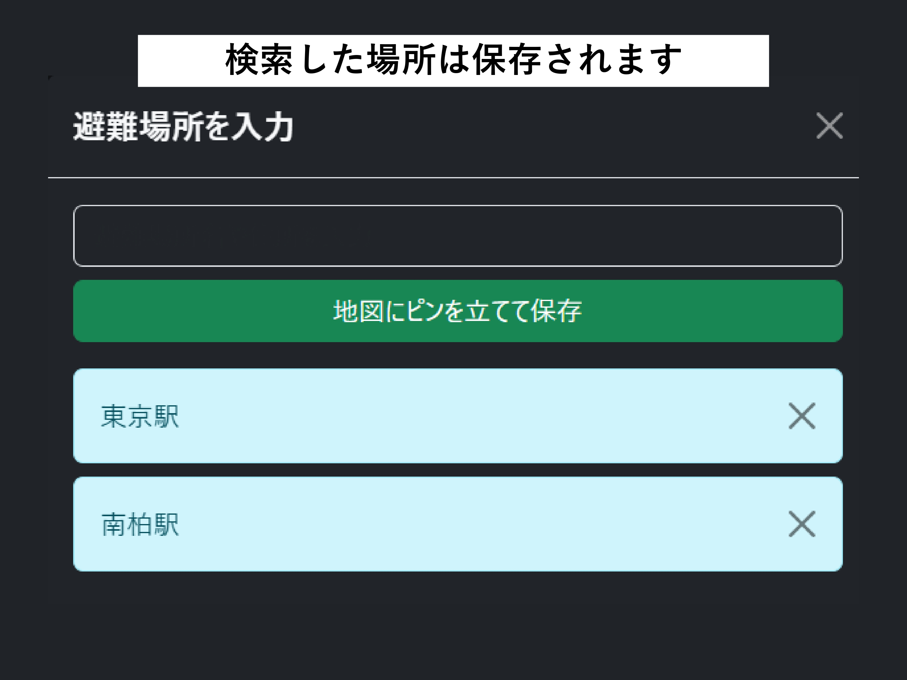

 Quake Guard
災害対策ポータル
使い方 / How to Use
避難場所マップの基本的な使用方法は以下の通りです




前
次
避難場所を探す
現在地を許可しないと使えません！
避難場所タブをクリックします。
表示される入力欄に場所を入力します。
指定した場所にピンを立てる
ピンをクリックすると、あなたの現在地からその避難場所までの経路が地図上に表示されます。
使ってみる
Map Version: 1.0.3J
Quake Guard
災害対策ポータル
防災グッズリスト
電話
避難場所
設定
検索
チェックリスト & メモ
追加
メモ
電話番号 & メモ
追加
メモ
避難場所を入力
地図にピンを立てて保存
設定
言語設定
日本語
English
色テーマ
ダーク
ライト
責任者連絡先
山田 太郎（メール: yamada@example.com / 電話: 090-1234-5678）
使い方